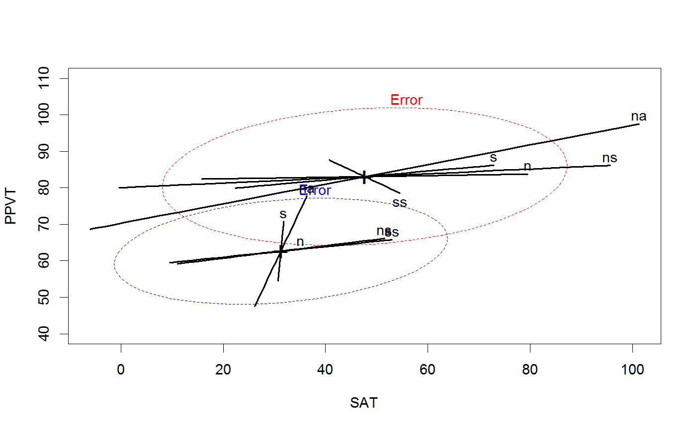

<!-- Generated by pkgdown: do not edit by hand -->
<!DOCTYPE html>
<html>
  <head>
  <meta charset="utf-8">
<meta http-equiv="X-UA-Compatible" content="IE=edge">
<meta name="viewport" content="width=device-width, initial-scale=1.0">

<title>Rohwer Data Set — Rohwer • heplots</title>

<!-- jquery -->
<script src="https://code.jquery.com/jquery-3.1.0.min.js" integrity="sha384-nrOSfDHtoPMzJHjVTdCopGqIqeYETSXhZDFyniQ8ZHcVy08QesyHcnOUpMpqnmWq" crossorigin="anonymous"></script>
<!-- Bootstrap -->
<link href="https://maxcdn.bootstrapcdn.com/bootswatch/3.3.7/cerulean/bootstrap.min.css" rel="stylesheet" crossorigin="anonymous">

<script src="https://maxcdn.bootstrapcdn.com/bootstrap/3.3.7/js/bootstrap.min.js" integrity="sha384-Tc5IQib027qvyjSMfHjOMaLkfuWVxZxUPnCJA7l2mCWNIpG9mGCD8wGNIcPD7Txa" crossorigin="anonymous"></script>

<!-- Font Awesome icons -->
<link href="https://maxcdn.bootstrapcdn.com/font-awesome/4.6.3/css/font-awesome.min.css" rel="stylesheet" integrity="sha384-T8Gy5hrqNKT+hzMclPo118YTQO6cYprQmhrYwIiQ/3axmI1hQomh7Ud2hPOy8SP1" crossorigin="anonymous">


<!-- pkgdown -->
<link href="../pkgdown.css" rel="stylesheet">
<script src="../jquery.sticky-kit.min.js"></script>
<script src="../pkgdown.js"></script>
  
  
<!-- mathjax -->
<script src='https://mathjax.rstudio.com/latest/MathJax.js?config=TeX-AMS-MML_HTMLorMML'></script>

<!--[if lt IE 9]>
<script src="https://oss.maxcdn.com/html5shiv/3.7.3/html5shiv.min.js"></script>
<script src="https://oss.maxcdn.com/respond/1.4.2/respond.min.js"></script>
<![endif]-->


  </head>

  <body>
    <div class="container template-reference-topic">
      <header>
      <div class="navbar navbar-default navbar-fixed-top" role="navigation">
  <div class="container">
    <div class="navbar-header">
      <button type="button" class="navbar-toggle collapsed" data-toggle="collapse" data-target="#navbar">
        <span class="icon-bar"></span>
        <span class="icon-bar"></span>
        <span class="icon-bar"></span>
      </button>
      <a class="navbar-brand" href="../index.html">heplots</a>
    </div>
    <div id="navbar" class="navbar-collapse collapse">
      <ul class="nav navbar-nav">
        <li>
  <a href="../index.html">
    <span class="fa fa-home fa-lg"></span>
     
  </a>
</li>
<li>
  <a href="../reference/index.html">Reference</a>
</li>
      </ul>
      
      <ul class="nav navbar-nav navbar-right">
        
      </ul>
    </div><!--/.nav-collapse -->
  </div><!--/.container -->
</div><!--/.navbar -->

      
      </header>

      <div class="row">
  <div class="col-md-9 contents">
    <div class="page-header">
    <h1>Rohwer Data Set</h1>
    </div>

    
    <p>Data from an experiment by William D. Rohwer on kindergarten children
designed to examine how well performance on a set of paired-associate (PA)
tasks can predict performance on some measures of aptitude and achievement.</p>
    

    <pre class="usage"><span class='fu'>data</span>(<span class='no'>Rohwer</span>)</pre>
        
    <h2 class="hasAnchor" id="format"><a class="anchor" href="#format"></a>Format</h2>

    <p>A data frame with 69 observations on the following 10 variables.</p><dl class='dl-horizontal'>
    <dt><code>group</code></dt><dd><p>a numeric vector, corresponding to SES</p></dd>
    <dt><code>SES</code></dt><dd><p>Socioeconomic status, a factor with levels <code>Hi</code> <code>Lo</code></p></dd>
    <dt><code>SAT</code></dt><dd><p>a numeric vector: score on a Student Achievement Test</p></dd>
    <dt><code>PPVT</code></dt><dd><p>a numeric vector: score on the Peabody Picture Vocabulary Test</p></dd>
    <dt><code>Raven</code></dt><dd><p>a numeric vector: score on the Raven Progressive Matrices Test</p></dd>
    <dt><code>n</code></dt><dd><p>a numeric vector: performance on a 'named' PA task</p></dd>
    <dt><code>s</code></dt><dd><p>a numeric vector: performance on a 'still' PA task</p></dd>
    <dt><code>ns</code></dt><dd><p>a numeric vector: performance on a 'named still' PA task</p></dd>
    <dt><code>na</code></dt><dd><p>a numeric vector: performance on a 'named action' PA task</p></dd>
    <dt><code>ss</code></dt><dd><p>a numeric vector: performance on a 'sentence still' PA task</p></dd>
  </dl>
    
    <h2 class="hasAnchor" id="details"><a class="anchor" href="#details"></a>Details</h2>

    <p>The variables <code>SAT</code>, <code>PPVT</code> and <code>Raven</code> are responses to be
potentially explained by performance on the paired-associate (PA) learning task<code>n</code>, <code>s</code>, <code>ns</code>, <code>na</code>, and <code>ss</code>.</p>
    
    <h2 class="hasAnchor" id="source"><a class="anchor" href="#source"></a>Source</h2>

    <p>Timm, N.H. 1975). 
  <em>Multivariate Analysis with Applications in Education and Psychology</em>. 
  Wadsworth (Brooks/Cole), Examples 4.3 (p. 281), 4.7 (p. 313), 4.13 (p. 344).</p>
    
    <h2 class="hasAnchor" id="references"><a class="anchor" href="#references"></a>References</h2>

    <p>Friendly, M. (2007).
  HE plots for Multivariate General Linear Models.
  <em>Journal of Computational and Graphical Statistics</em>, <b>16</b>(2) 421--444.
  <a href='http://datavis.ca/papers/jcgs-heplots.pdf'>http://datavis.ca/papers/jcgs-heplots.pdf</a></p>
    

    <h2 class="hasAnchor" id="examples"><a class="anchor" href="#examples"></a>Examples</h2>
    <pre class="examples"><div class='input'><span class='fu'>str</span>(<span class='no'>Rohwer</span>)</div><div class='output co'>#&gt; 'data.frame':	69 obs. of  10 variables:
#&gt;  $ group: int  1 1 1 1 1 1 1 1 1 1 ...
#&gt;  $ SES  : Factor w/ 2 levels "Hi","Lo": 2 2 2 2 2 2 2 2 2 2 ...
#&gt;  $ SAT  : int  49 47 11 9 69 35 6 8 49 8 ...
#&gt;  $ PPVT : int  48 76 40 52 63 82 71 68 74 70 ...
#&gt;  $ Raven: int  8 13 13 9 15 14 21 8 11 15 ...
#&gt;  $ n    : int  1 5 0 0 2 2 0 0 0 3 ...
#&gt;  $ s    : int  2 14 10 2 7 15 1 0 0 2 ...
#&gt;  $ ns   : int  6 14 21 5 11 21 20 10 7 21 ...
#&gt;  $ na   : int  12 30 16 17 26 34 23 19 16 26 ...
#&gt;  $ ss   : int  16 27 16 8 17 25 18 14 13 25 ...</div><div class='input'>
<span class='co'>## ANCOVA, assuming equal slopes</span>
<span class='no'>rohwer.mod</span> <span class='kw'>&lt;-</span> <span class='fu'>lm</span>(<span class='fu'>cbind</span>(<span class='no'>SAT</span>, <span class='no'>PPVT</span>, <span class='no'>Raven</span>) ~ <span class='no'>SES</span> + <span class='no'>n</span> + <span class='no'>s</span> + <span class='no'>ns</span> + <span class='no'>na</span> + <span class='no'>ss</span>, <span class='kw'>data</span><span class='kw'>=</span><span class='no'>Rohwer</span>)
<span class='fu'>Anova</span>(<span class='no'>rohwer.mod</span>)</div><div class='output co'>#&gt; 
#&gt; Type II MANOVA Tests: Pillai test statistic
#&gt;     Df test stat approx F num Df den Df    Pr(&gt;F)    
#&gt; SES  1   0.37853  12.1818      3     60 2.507e-06 ***
#&gt; n    1   0.04030   0.8400      3     60  0.477330    
#&gt; s    1   0.09271   2.0437      3     60  0.117307    
#&gt; ns   1   0.19283   4.7779      3     60  0.004729 ** 
#&gt; na   1   0.23134   6.0194      3     60  0.001181 ** 
#&gt; ss   1   0.04990   1.0504      3     60  0.376988    
#&gt; ---
#&gt; Signif. codes:  0 <U+0091>***<U+0092> 0.001 <U+0091>**<U+0092> 0.01 <U+0091>*<U+0092> 0.05 <U+0091>.<U+0092> 0.1 <U+0091> <U+0092> 1</div><div class='input'>
<span class='co'># Visualize the ANCOVA model</span>
<span class='fu'><a href='heplot.html'>heplot</a></span>(<span class='no'>rohwer.mod</span>)</div><div class='img'></div><div class='input'><span class='co'># Add ellipse to test all 5 regressors</span>
<span class='fu'><a href='heplot.html'>heplot</a></span>(<span class='no'>rohwer.mod</span>, <span class='kw'>hypotheses</span><span class='kw'>=</span><span class='fu'>list</span>(<span class='st'>"Regr"</span> <span class='kw'>=</span> <span class='fu'>c</span>(<span class='st'>"n"</span>, <span class='st'>"s"</span>, <span class='st'>"ns"</span>, <span class='st'>"na"</span>, <span class='st'>"ss"</span>)))</div><div class='img'></div><div class='input'><span class='co'># View all pairs</span>
<span class='fu'>pairs</span>(<span class='no'>rohwer.mod</span>, <span class='kw'>hypotheses</span><span class='kw'>=</span><span class='fu'>list</span>(<span class='st'>"Regr"</span> <span class='kw'>=</span> <span class='fu'>c</span>(<span class='st'>"n"</span>, <span class='st'>"s"</span>, <span class='st'>"ns"</span>, <span class='st'>"na"</span>, <span class='st'>"ss"</span>)))</div><div class='img'></div><div class='input'>
# or 3D plot
</div><span class='co'># NOT RUN {</span>
<span class='no'>col</span> <span class='kw'>&lt;-</span> <span class='fu'>c</span>(<span class='st'>"red"</span>, <span class='st'>"green3"</span>, <span class='st'>"blue"</span>, <span class='st'>"cyan"</span>, <span class='st'>"magenta"</span>, <span class='st'>"brown"</span>, <span class='st'>"gray"</span>)
<span class='fu'><a href='heplot3d.html'>heplot3d</a></span>(<span class='no'>rohwer.mod</span>, <span class='kw'>hypotheses</span><span class='kw'>=</span><span class='fu'>list</span>(<span class='st'>"Regr"</span> <span class='kw'>=</span> <span class='fu'>c</span>(<span class='st'>"n"</span>, <span class='st'>"s"</span>, <span class='st'>"ns"</span>, <span class='st'>"na"</span>, <span class='st'>"ss"</span>)),
                     <span class='kw'>col</span><span class='kw'>=</span><span class='no'>col</span>, <span class='kw'>wire</span><span class='kw'>=</span><span class='fl'>FALSE</span>)
<span class='co'># }</span><div class='input'>
<span class='co'>## fit separate, independent models for Lo/Hi SES</span>
<span class='no'>rohwer.ses1</span> <span class='kw'>&lt;-</span> <span class='fu'>lm</span>(<span class='fu'>cbind</span>(<span class='no'>SAT</span>, <span class='no'>PPVT</span>, <span class='no'>Raven</span>) ~ <span class='no'>n</span> + <span class='no'>s</span> + <span class='no'>ns</span> + <span class='no'>na</span> + <span class='no'>ss</span>, <span class='kw'>data</span><span class='kw'>=</span><span class='no'>Rohwer</span>, <span class='kw'>subset</span><span class='kw'>=</span><span class='no'>SES</span><span class='kw'>==</span><span class='st'>"Hi"</span>)
<span class='no'>rohwer.ses2</span> <span class='kw'>&lt;-</span> <span class='fu'>lm</span>(<span class='fu'>cbind</span>(<span class='no'>SAT</span>, <span class='no'>PPVT</span>, <span class='no'>Raven</span>) ~ <span class='no'>n</span> + <span class='no'>s</span> + <span class='no'>ns</span> + <span class='no'>na</span> + <span class='no'>ss</span>, <span class='kw'>data</span><span class='kw'>=</span><span class='no'>Rohwer</span>, <span class='kw'>subset</span><span class='kw'>=</span><span class='no'>SES</span><span class='kw'>==</span><span class='st'>"Lo"</span>)

<span class='co'># overlay the separate HE plots</span>
<span class='fu'><a href='heplot.html'>heplot</a></span>(<span class='no'>rohwer.ses1</span>, <span class='kw'>ylim</span><span class='kw'>=</span><span class='fu'>c</span>(<span class='fl'>40</span>,<span class='fl'>110</span>),<span class='kw'>col</span><span class='kw'>=</span><span class='fu'>c</span>(<span class='st'>"red"</span>, <span class='st'>"black"</span>))</div><div class='input'><span class='fu'><a href='heplot.html'>heplot</a></span>(<span class='no'>rohwer.ses2</span>, <span class='kw'>add</span><span class='kw'>=</span><span class='fl'>TRUE</span>, <span class='kw'>col</span><span class='kw'>=</span><span class='fu'>c</span>(<span class='st'>"blue"</span>, <span class='st'>"black"</span>), <span class='kw'>grand.mean</span><span class='kw'>=</span><span class='fl'>TRUE</span>, <span class='kw'>error.ellipse</span><span class='kw'>=</span><span class='fl'>TRUE</span>)</div><div class='img'></div><div class='input'>
</div></pre>
  </div>
  <div class="col-md-3 hidden-xs hidden-sm" id="sidebar">
    <h2>Contents</h2>
    <ul class="nav nav-pills nav-stacked">
      
      <li><a href="#format">Format</a></li>

      <li><a href="#details">Details</a></li>

      <li><a href="#source">Source</a></li>

      <li><a href="#references">References</a></li>
      
      <li><a href="#examples">Examples</a></li>
    </ul>

  </div>
</div>

      <footer>
      <div class="copyright">
  <p>Developed by John Fox, Michael Friendly.</p>
</div>

<div class="pkgdown">
  <p>Site built with <a href="http://hadley.github.io/pkgdown/">pkgdown</a>.</p>
</div>

      </footer>
   </div>

  </body>
</html>
